01 / 07
Hero 首屏
先要求输入，却还没有让人理解产出。
原首屏重点演示文本输入，过程与结果的表达较弱，也没有充分展示优秀作品和品牌资产。
新访客未必带着提示词而来；输入后仍需注册，无法立即听到结果。
Suno 是一款 AI 音乐创作工具。用户可以通过文字描述、歌词或录音生成歌曲，再使用编辑工具完善作品，并在平台上发现、试听与分享音乐。
面向未注册、未登录用户的 Suno 首页：问题发现、问题定位与优化设计。
不包含首页链接跳转的详情子页。
01 / 问题发现及目标定义
注册或登录后，保持登录状态的用户访问 suno.com，会直接进入工作台。未注册、未登录的用户会访问品牌 / 能力介绍内容首页。
以尚未了解、使用产品的新用户为主要对象，围绕他们的关注点设计首页。
应该给用户看什么内容？
重构模块顺序与内容关系，让新用户快速理解产品能力，并产生尝试的兴趣。
01 / 07
原首屏重点演示文本输入，过程与结果的表达较弱，也没有充分展示优秀作品和品牌资产。
新访客未必带着提示词而来；输入后仍需注册，无法立即听到结果。
02 / 07
作品能直接证明产品能力，但在原结构中与首屏分开。可以把试听融入 Hero，让用户先听见自己可能做出的音乐。
03 / 07
模型、工具与权益简单铺陈，用户需要自己拼出产品全貌。
部分卡片进入详情，部分只引导注册，点击预期不一致。
04 / 07
套餐出现在创作者推荐和移动体验之前。应在利益点讲述完整后，再承接免费尝试与订阅选择。
05 / 07
仅靠 #1 和评分，难以让用户理解移动应用的发现、创作与分享体验。
下载入口需要从桌面更顺畅地连接手机。
06 / 07
创作者的推荐短视频能帮助新用户建立兴趣，但位置偏后。
横向拖动不便于鼠标浏览，观看也需要更专注的状态。
07 / 07
Suno 已有丰富的帮助中心内容。首页可用搜索与常见问题标签，兼顾快速查找和额外提问。
Suno 已有字标、图形、色彩、字体及品牌视频等资产，Metalab 的品牌与产品案例提供了参考。原首页主要使用字标与部分品牌色，尚有更完整的表达空间。
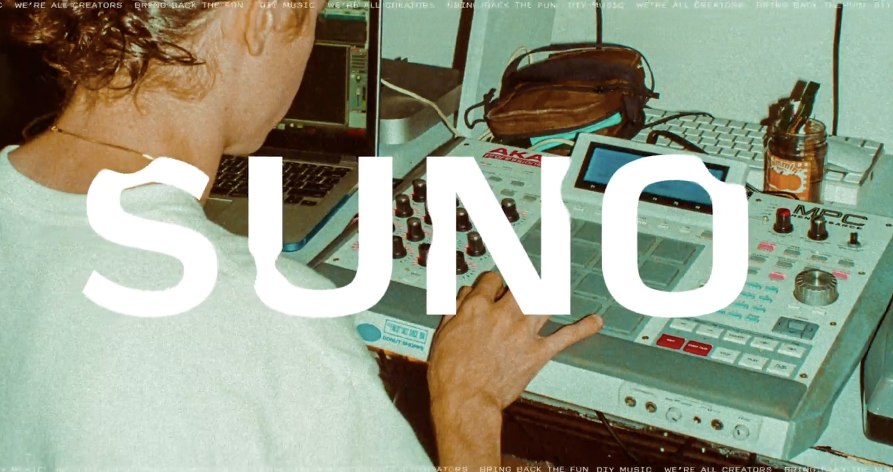
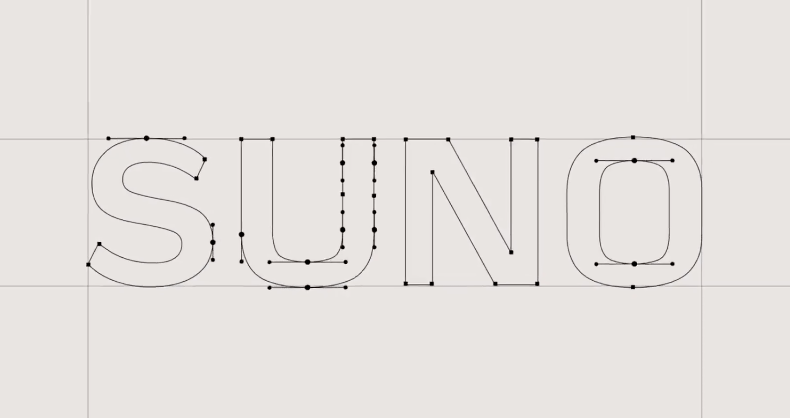
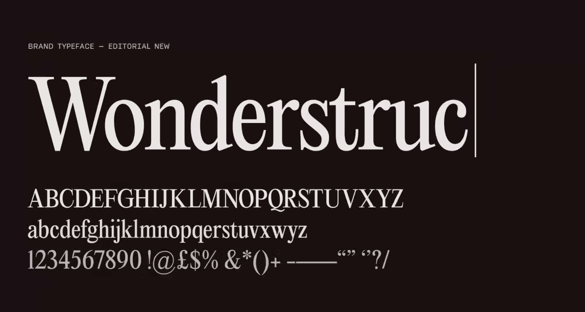
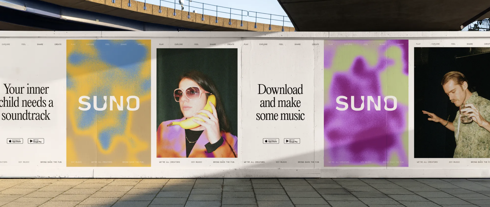
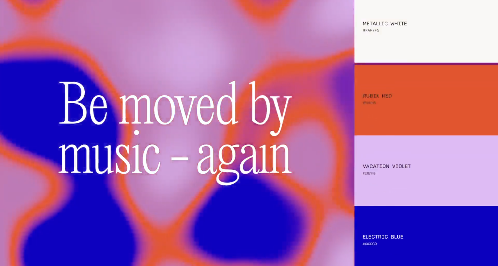
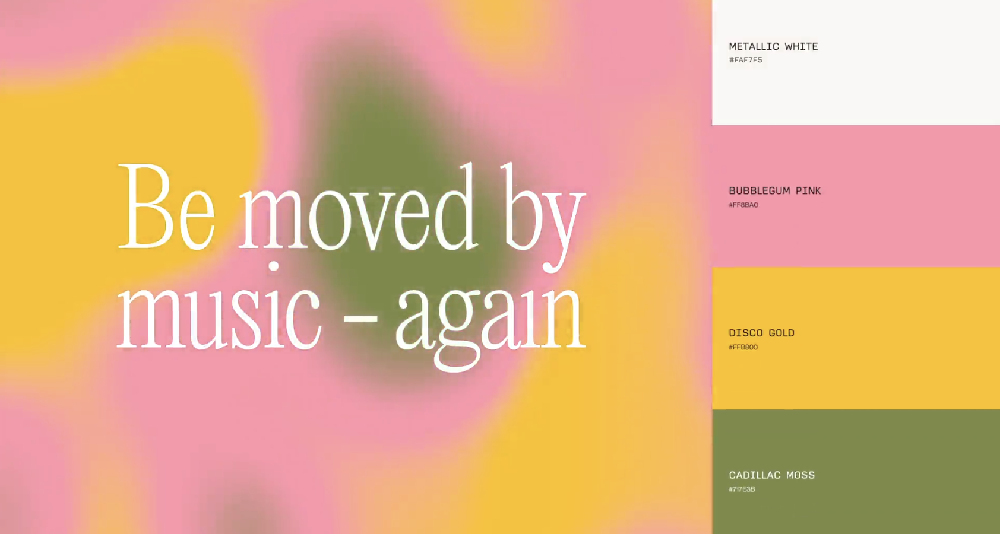
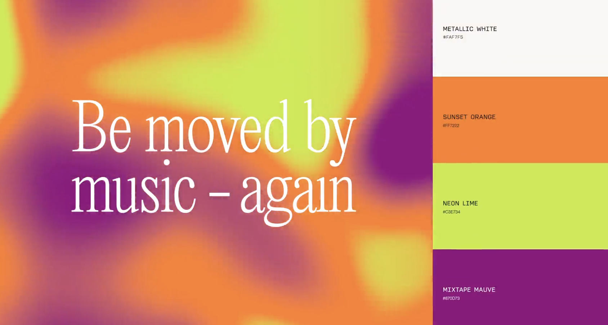
充分发挥品牌资产的优势，让用户在浏览中建立鲜明的品牌印象。
02 / 结构重构
作品融入首屏，推荐内容前置；理解能力后，再选择套餐、下载应用或在 FAQ 解决疑问。
01 / 06
把优秀作品融入首屏，支持直接试听；品牌字标、图形与概念文案共同传达“你也可以创作”。
媒体标识作为补充信息，帮助访客了解产品受到的关注。
02 / 06
音乐生成：强大模型、音乐灵感与免费开始。
专业制作：工作台、分轨与重混。
你的声音：Voices、自定义模型与精细控制。
作品与可能：分享、商用与持续创作。
03 / 06
通过真实创作者的推荐视频，展示不同人如何使用 Suno，让能力介绍变成具体的创作想象。
04 / 06
完整展示套餐和权益；用“免费”直接说明入门成本，把行动按钮放在费用与权益之间。
05 / 06
补充品牌演示，让发现、创作与分享更直观；iPhone 与 Android 分别提供二维码，方便从电脑转向手机。
06 / 06
用常见问题标签快速填入搜索框，提交后进入帮助中心。下方保留完整网站地图与社交入口。
03 / 体验及视觉设计
首屏hero页
用品牌配色、流动渐变与噪点融合，形成鲜明的首屏画面。
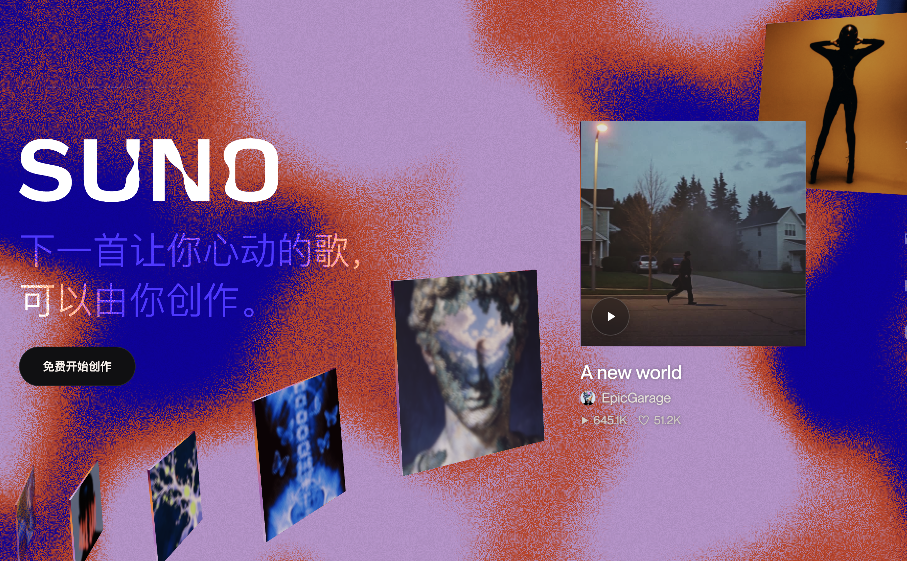
首屏hero页
专辑不断轮转，支持拖动浏览与点击试听，用真实产出表达产品能力。
首屏hero页
打字与发送动效配合 Slogan，让访客快速理解使用方式。
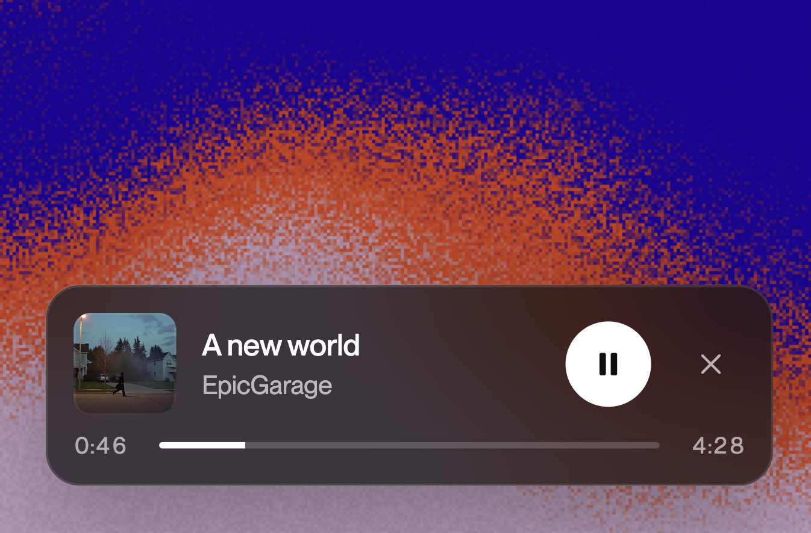
首屏hero页
试听后保留播放器，用户向下了解产品时，音乐体验继续。
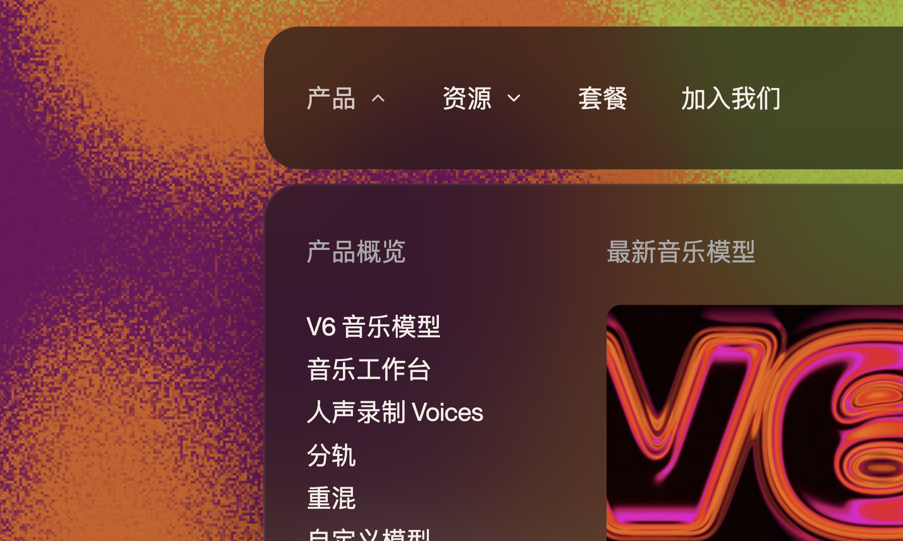
顶部栏
浮动圆角顶栏与内容分层，补充语言切换和移动下载菜单。
顶部栏
离开首屏后，字标与创作按钮进入顶栏，承接后续浏览。
顶部栏
菜单底板移动、内容渐隐渐显，四个下拉菜单使用一致的切换方式。
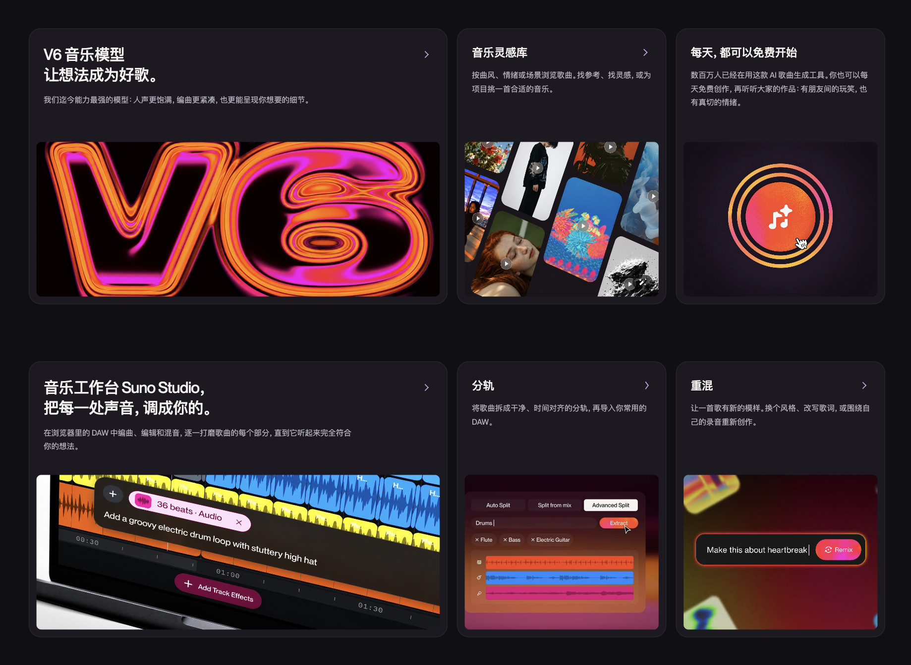
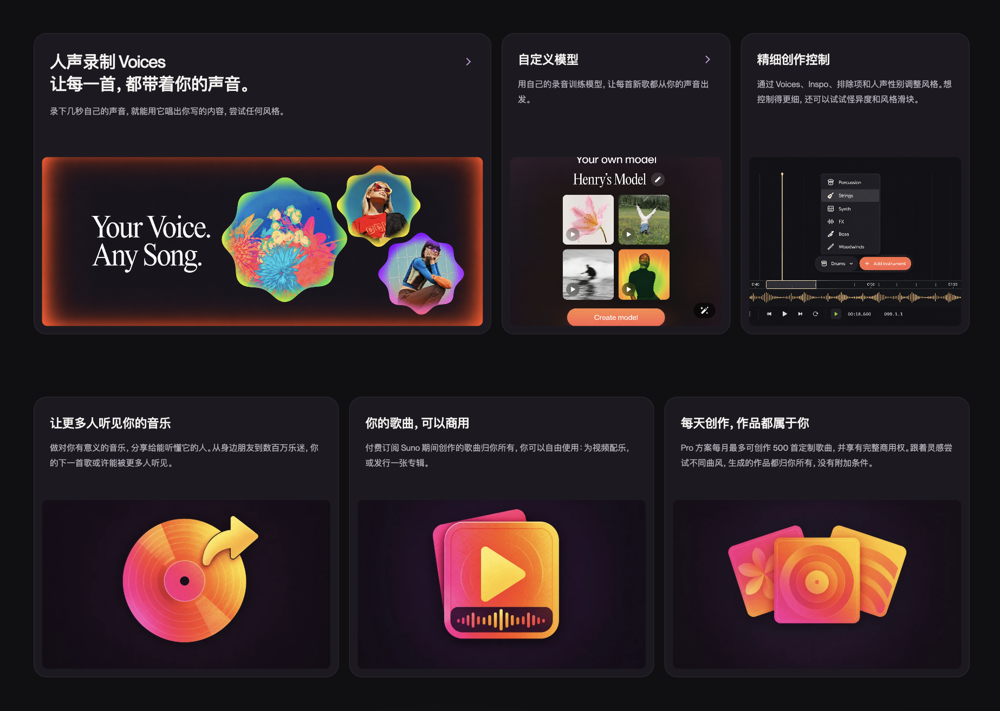
产品能力
用四组 Bento 卡片梳理能力关系；有详情的卡片整面可点击，只引导注册的特点不再伪装成入口。
用户推荐
视频自动轮播；点击后连同作者入口平滑放大到中央，点击内容外返回。
QA
悬停标签预览问题，点击填入；提交后前往帮助中心搜索。